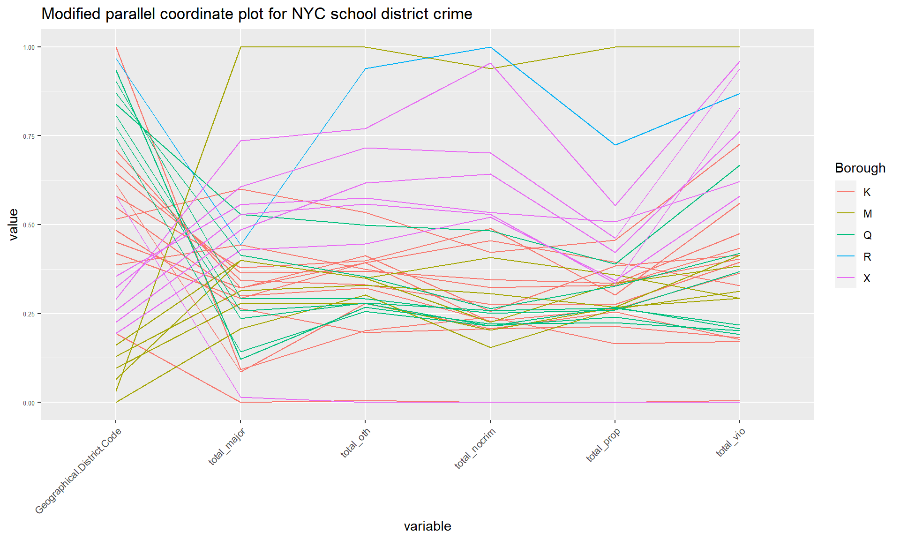

Chapter 4 Results
4.1 Scatterplot for total crimes v.s. total number of students

It is natural to ask if a larger number of registered students lead to a larger number of school crime. To answer this question, we plot the scatterplot of the total number of students and the total number of school crimes for each district in each school year. To find the total number of students, we take the sum of schools from the same district and same school year. The total number of crimes in each school is the sum of five different types of crimes provided in the data. The total number of crimes in each district is the sum of the total number of crimes in each school from the same district and school year. The correlation between the two variables is calculated and displayed in the graph. Contradicting our intuition, the correlation is weak. The plot indicates that the number of registered students in the district is not strongly correlated with the total number of school crimes in each district. The scatter plot explains the weak correlation. When the total number of registered students is high, some districts have a high number of school crimes, while others don’t.
4.2 Parallel coordinate plot for school districts

A parallel coordinate plot is useful for finding outliers and clusters. In this case, we are interested in finding which school district has a large number of crimes. Five different types of crime are calculated for each district by taking the sum of schools from the same district over three years. We found two outliers in the top part of the graph, district 2 from Manhattan and district 31 from Staten Island. Then, we see several districts from the Bronx have school crime well above other districts. We also observed a cluster of districts from Queens has low overall crimes. Based on this plot, we can assume the Bronx has the highest overall school crimes, while the Queens has the lowest overall crime. Staten Island has a very high number of school crimes even though it contains only one school district. Schools in Manhattan are relatively safe except those from District 2. To understand the two outliers having very low crime counts, we look into the dataset for an answer. A few schools are labeled in different Borough with other schools from the same district, which create those outliers. We conclude those two outliers at the bottom of the graph are not valid.
4.3 Treemap for total registered students and the number of schools in each districts

What is the distribution of schools and students over all districts and boroughs? We used a treemap to answer this question. Each row in our dataset is a building, and one building can have multiple schools. This is why there is a column for the number of schools for each row. To find the number of students and number of schools for each district, we simply take the sum by groups. We can see that Brooklyn and Queens have the largest number of students, while the Bronx has more students than Manhattan. Staten Island has one school district. In Manhattan, most registered students and schools are concentrated in District 2. In the Bronx, the number of registers is positively correlated to the number of schools, based on the graph. In Brooklyn, some districts with a small number of registers have a large number of schools. On the contrary, some districts in Brooklyn with a large number of registers have a small number of schools. The Number of schools is more evenly distributed in the Bronx than in Manhattan. The number of schools is more evenly distributed in Queens than in Brooklyn.
4.4 Time Series of total crime in New York City
What is the trend of each type of crime over time? To answer this question, we plot a time series plot for the total number of each type of school crime in NYC over years. The process is straightforward. We take the sum of each type of school crime group by year. We observe a slight increase in the total number of non-criminal crimes over time. We observe a slight decrease in the total number of property crimes, major crimes, and other crimes over time. We observe no change in the total number of violent crimes. In all school years, the number of non-criminal crimes is the highest among the five. The number of major crimes is the lowest among the five. Based on personal opinions, someone may argue that overall school safety in NYC improved over years, while others consider the overall school safety remains the same.
4.5 Time series plot regarding number of crimes in each category
We would also like to see how number of crimes in each category changes overtime. We then decided to make a time series plot to observe the change in the number of crimes in each category. We used a different color for different categories of crimes for easier interpretation with faceting on boroughs. The reason why we decided to focus on boroughs instead of geographical districts is because there are over 30 districts while there are only 5 boroughs, which would make the graph less crowded. From the graph, we can see that for most of the boroughs the top category of crime is non-criminal crime, followed by other crime, property crime, violent crime, and major crime, in that order respectively. We can also observe that Brooklyn has a higher number of crimes in most categories compared to other boroughs followed by the Bronx. The number of crimes did not change much over the years for most categories of crimes. For the number of non-criminal crimes in Brooklyn and Bronx, it does seem like there might be an upward trend over the years.
4.6 Bar chart regarding number of schools at each location
As there might be different numbers of schools in each location, we thought we could also examine the underlying structure of schools among different boroughs by making bar charts to see the frequency count of the number of schools in each location over the years. As expected, we can observe that for all the boroughs, most of the locations only include one school, but it is also interesting to see that there are 10 schools at some of the locations. We can also see that the frequency count does not really change over the years, meaning that the existing locations did not have much changes and there might be limited new locations.
4.7 Mosaic plot (school year/boroughs/number of crimes in each category)
To understand the association between categories of crimes and boroughs over the years, we made a mosaic plot. The result is similar to what we expected based on the result from the previous plots. We can observe that for almost all the boroughs the top category of crime is non-criminal crime, followed by other crime, property crime, violent crime, and major crime, in that order respectively. From the graph, now we can also observe the differences in total number of crimes among the boroughs by looking at the width of each bar with Brooklyn and the Bronx having the highest total number of crimes. Lastly, we can notice the proportions regarding different categories of crimes and total number of crimes among the boroughs did not really change much over the years.
4.8 Cleveland dot plot
To have a better understanding of the number of crimes in each category at different geographical districts, we decided to make a Cleveland dot plot as the number of crimes is discrete data. We separated different categories of crimes by color for easier interpretation. As you can see from the graph, for most of the districts, non-criminal crime is the dominant category, followed by other crime, property crime, violent crime, and major crime, in that order respectively. From the graph, we can also learn about which districts have higher numbers of crimes regarding different categories. We can see that District 2, 31, and 10 have much higher numbers of crimes in most categories than the rest of the districts.
4.9 Scatter plot matrix for 5 different type of crimes
At this point, it is good to know if each type of school crime correlated statistically. To answer this question, we can use matrix scatter plots. We summarize the sum of each type of crime grouping by district and school year. The scatter plot matrices use the Pearson method to calculate the correlation between each pair of crimes. A histogram of each crime is also provided to understand the distribution of school crimes. We observe a strong correlation between any pair of different types of school crime. All the correlations are positive, thus a district with a high number of one type of crime is also likely to have a high number of other types of school crimes. For each type of crime, the distribution is right skewed.
4.10 Principle components analysis (PCA)
## Importance of components:
## PC1 PC2 PC3 PC4 PC5 PC6 PC7
## Standard deviation 2.338 0.82173 0.64171 0.52793 0.28416 0.27190 0.11182
## Proportion of Variance 0.781 0.09646 0.05883 0.03982 0.01153 0.01056 0.00179
## Cumulative Proportion 0.781 0.87747 0.93630 0.97612 0.98765 0.99821 1.00000## PC1 PC2 PC3 PC4 PC5 PC6 PC7
## Major.N 0.358 -0.451 0.429 -0.535 0.024 0.291 -0.336
## Oth.N 0.407 -0.018 -0.212 0.453 0.378 -0.158 -0.645
## NoCrim.N 0.394 0.014 -0.499 0.039 -0.688 0.344 -0.048
## Prop.N 0.376 0.025 0.551 0.582 -0.040 0.272 0.374
## Vio.N 0.391 -0.287 -0.429 -0.167 0.486 0.009 0.562
## X..Schools 0.411 0.040 0.176 -0.146 -0.316 -0.815 0.112
## Register 0.296 0.843 0.062 -0.344 0.214 0.181 -0.018To understand how the variables contribute to the total variance and how they are related to each other, we decided to conduct principle components analysis (PCA). As we observed that the number of schools and crimes did not really change much over the years, we decided to conduct PCA only for the year of 2013-14 for simplicity. We picked a few important variables to conduct the analysis, including total number of crimes for each crime category, total number of schools, and total number of registered students for each geographical district. From the PCA table, we can observe that the first two principal components capture around 88% of the total variance, which is relatively high. We also display the specific linear combination of variables for each principal component for additional information. We then drew a biplot for further interpretation. From the graph, we can see that the total number of students is surprisingly uncorrelated with most of the other variables, which contradicts with what we expected: higher number of students would also indicate higher number of crimes. We can also observe that the total number of schools, non-criminal crimes, property crimes, and other crimes are highly positively correlated, while the total number of violent crimes and major crimes are highly positively correlated.
4.11 Scatterplot with total school and total crime
In the PCA section, we observed that the number of schools in a district is strongly correlated to the number of total crimes. To verify the assumption, we plot a scatter plot of the total number of crimes vs. the total number of schools in each district. We calculated the total number of crimes in the same way as the first plot. The total number of schools is calculated by summing up the “X..Schools” column by groups. We observed a strong positive correlation. Hence indeed, if a district has a large number of schools, it is also likely to have a large number of crimes. One possible explanation is that most crime targets are buildings rather than students, thus more schools mean more targets.